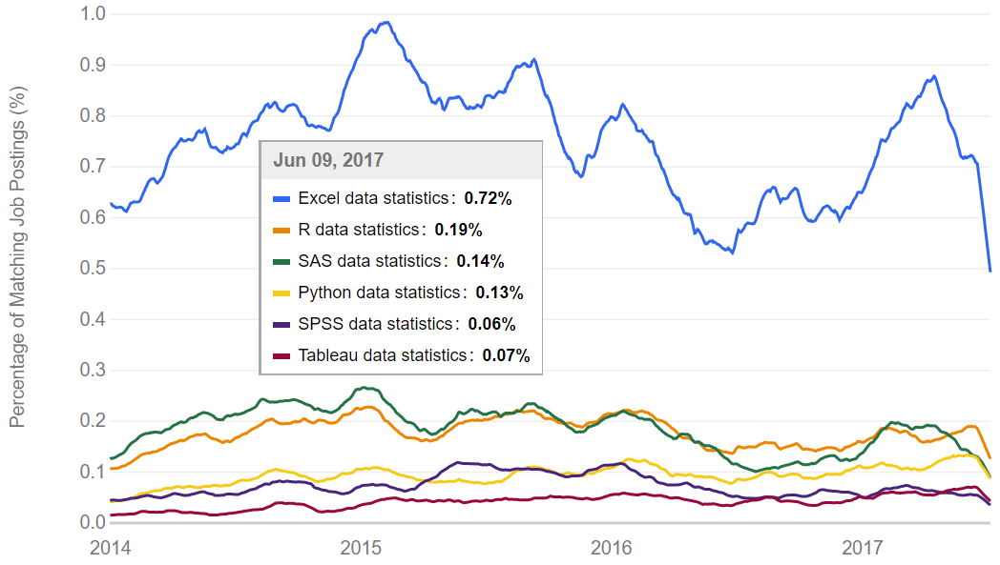

Créateurs
Robert Gentleman et Ross Ihaka dans les années 90 :

Source : https://www.stat.auckland.ac.nz/~ihaka/downloads/Otago.pdf
un environnement et un langage de programmation pour effectuer des calculs statistiques et créer des graphiques;
un logiciel libre : logiciel gratuit distribué avec son code source, il peut être étudié, modifié et distribué librement;
un logiciel se composant du R de base (fonctions statistiques et graphiques standards) et d’extensions appelées packages (collections de nouvelles fonctions créées par des utilisateurs).
Typiquement, on utilise d’abord R pour faire de l’analyse statistique de données. On réalise donc en R les tâches suivantes :
Plusieurs utilisateurs de R doivent un jour développer leurs propres fonctions de calcul statistique. On peut devenir un développeur lorsque :
Bref, lorsque ce qui existe en R ne nous permet pas de faire exactement ce que l’on veut.
1990 - Au Département de statistique de l’Université d’Aukland en Nouvelle-Zélande, Ross Ihaka et Robert Gentleman ont l’idée de créer un nouveau logiciel statistique pour tester quelques idées dans leurs travaux de recherche.
1992 - Le langage est nommé R, car il s’agit de la première lettre des prénoms des deux créateurs, et parce qu’il est décidé que le langage utilisera la syntaxe du langage S développé dans les Bell Laboratories par John Chambers et collaborateurs.
1994 - Une version initiale du logiciel est utilisée pour donner des cours d’introduction à la statistique et elle est distribuée sur internet. Il est décidé que R sera un logiciel libre.
Robert Gentleman et Ross Ihaka dans les années 90 :
Source : https://www.stat.auckland.ac.nz/~ihaka/downloads/Otago.pdf
1996 - Martin Mächler de l’École polytechnique fédérale de Zurich en Suisse se joint à l’équipe des R & R pour développer R, qui connaît de plus en plus de succès. Malgré tout, bien vite trois personnes ne suffisent plus pour gérer le flot constant de courriels reçus d’utilisateurs.
1997 - Le CRAN est créé par Kurt Hornik et Friedrich Leisch à l’Université technique de Vienne en Autriche. Il s’agit d’un dépôt informatique pour les contributions des utilisateurs (packages). Peu après, le “R core”, soit le noyau de développeurs de R, est formé.
2000 - La première version officielle de R est publiée à une date particulière : le 29 février 2000!
Les membres du “R core” sont typiquement des chercheurs en calcul statistique. Ils travaillent pour différentes organisations, typiquement des universités, aux quatre coins du monde.
Depuis 2002, la fondation R amasse des dons et les utilisent pour maintenir des infrastructures et pour commanditer quelques travaux de développement.
Des conférences sont organisées et réunissent les développeurs de R ainsi que des utilisateurs de R : http://www.r-project.org/conferences.html
R a aussi sa revue scientifique, The R journal : http://journal.r-project.org
R est en constant développement. Il est actuellement mis à jour 4 à 6 fois par année. La version courante de R est téléchargeable sur le site web du projet R : http://www.r-project.org.
Le nombre de packages sur le CRAN croît de façon exponentielle (http://blog.revolutionanalytics.com/2017/01/cran-10000.html).
Il y a maintenant plus de 12 000 packages sur le CRAN (https://cran.r-project.org/web/packages/) et environ 1300 packages sur Bioconductor (www.bioconductor.org/), un dépôt informatique pour des contributions en R spécialisées en bio-informatique. Plusieurs de ces packages sont eux aussi en constant développement.
Quelques statistiques sur la popularité grandissante de R :


Source : https://www.indeed.com/jobtrends
Les caractéristiques de R sont particulièrement adaptées au monde de la recherche et de l’enseignement. Il est donc très utilisé dans les universités. Par contre, il comporte les limites suivantes :
Certains préfèrent utiliser un logiciel commercial, car :
Cependant, Keeling et Pavur (2007) arrivent à la conclusion que les résultats obtenus en R pour les analyses statistiques les plus courantes sont tout aussi exacts que ceux obtenus d’autres logiciels statistiques.
Cependant, plusieurs sites de questions/réponses (ex. http://stackoverflow.com/) ainsi que des listes courriel existent. On obtient rapidement une réponse d’autres utilisateurs lorsque l’on y soumet une question.
Pour une petite entreprise ayant besoin d’effectuer des calculs statistiques, R est un bon choix puisqu’il est gratuit.
Certaines grosses compagnies l’utilisent, notamment : http://makemeanalyst.com/companies-using-r/.
Même si une entreprise choisit d’utiliser un autre logiciel que R pour ses analyses statistiques, elle peut avoir recours à R pour certains calculs non implantés dans le logiciel qu’elle utilise principalement.
Fox, J. (2009). Aspects of the Social Organization and Trajectory of the R Project. The R Journal. Vol. 1 (2), pp. 5-13. http://journal.r-project.org/archive/2009-2/RJournal_2009-2_Fox.pdf
Keeling, K. B. et Pavur, R. J. (2007). A comparative study of the reliability of nine statistical software packages. Computational Statistics & Data Analysis. Vol. 51, pp. 3811-3831.